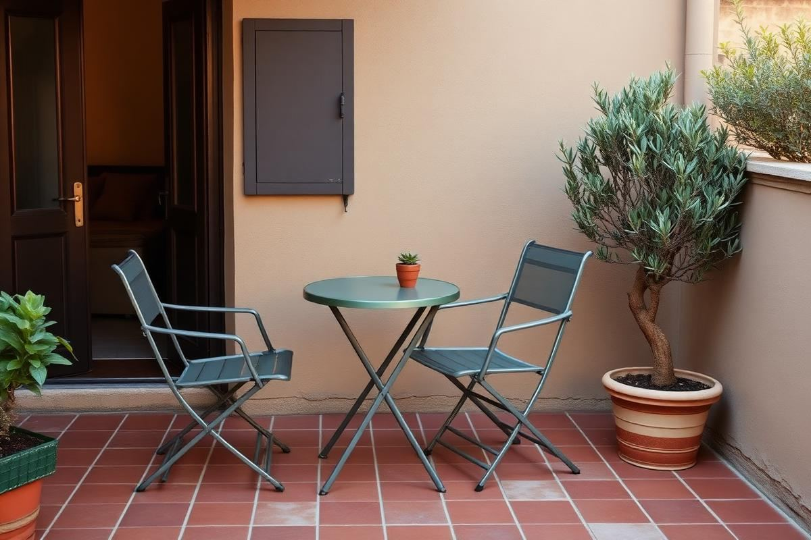
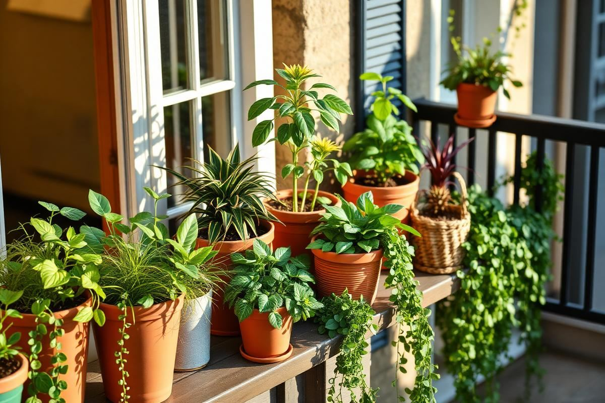

Outdoor Spaces
Small Balcony Decor Ideas: Turn 30 Square Feet Into a Room
A small balcony is not a wasted balcony. With three good choices, it becomes another room.
6 min read
Patios, balconies, and gardens. How to style outdoor rooms that feel like an extension of your home.
A small balcony is not a wasted balcony. With three good choices, it becomes another room.

A styled patio uses the same rules as a good living room — with materials that survive the weather.

Small outdoor spaces fail because the furniture is sized for a garden. Here are the dimensions, materials, and layouts that actually work outdoors in tight footprints.

Plants do more for a small outdoor space than furniture ever will — as long as they are grouped, sized, and repeated with some discipline.